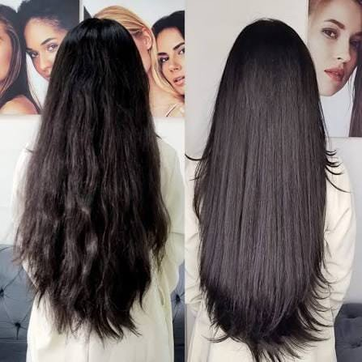
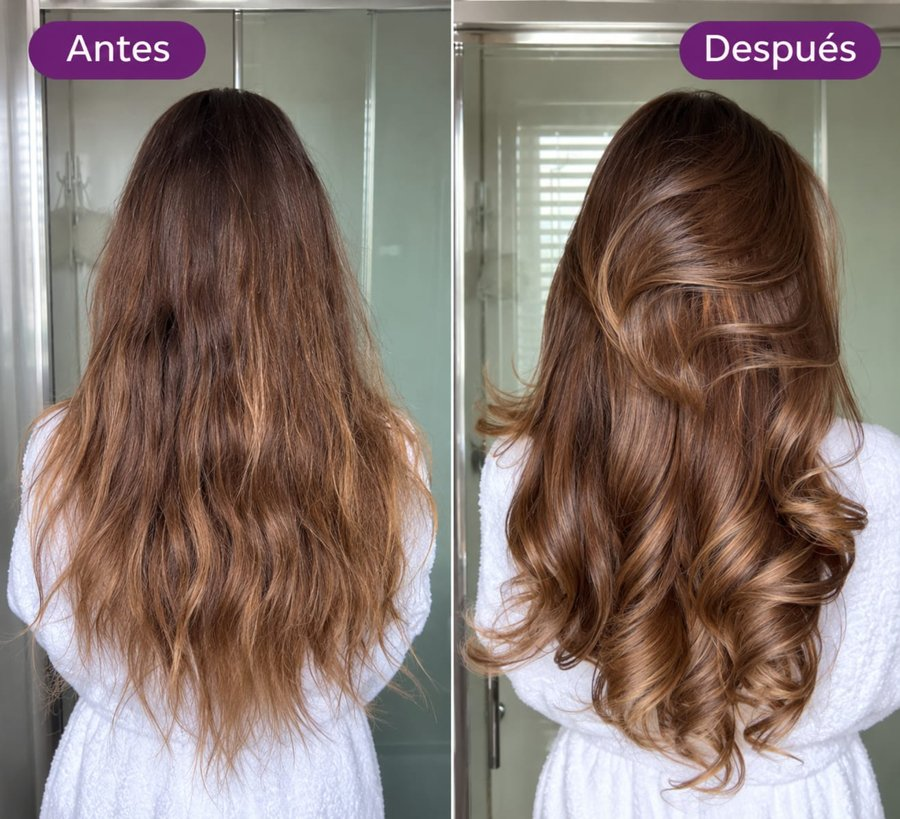
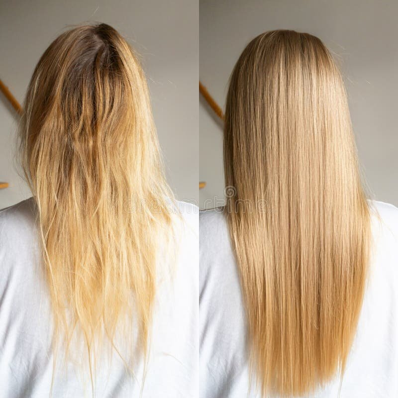
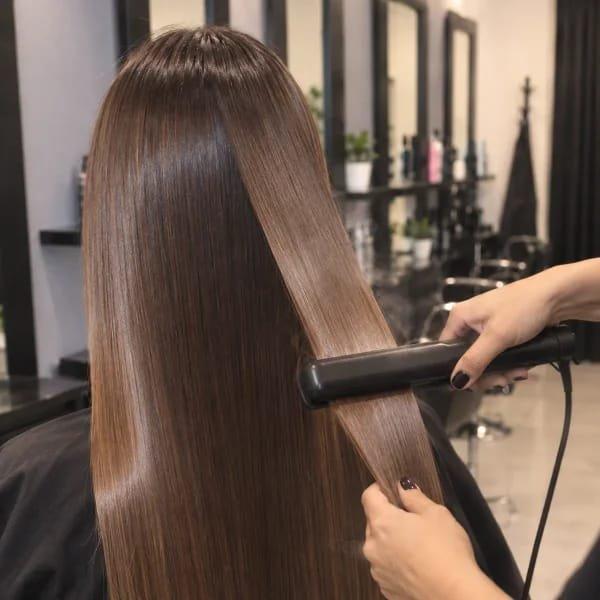

Servicios Kora
Tu cabello tiene un norte.
Tu cabello tiene un norte.
Vamos a encontrarlo.
Cada servicio comienza con un diagnóstico personalizado y termina con una guía clara para sostener los resultados en casa.

Ritual Kora · 60–75 min
$38.000
Nutrición
Devolvemos lípidos y flexibilidad al cabello seco. Seleccionamos activos y técnica según tu diagnóstico.

Ritual Kora · 45–60 min
$32.000
Hidratación
Recuperamos agua, suavidad y movimiento natural. Seleccionamos activos y técnica según tu diagnóstico.

Ritual Kora · 75–90 min
$46.000
Reconstrucción
Fortalecemos la fibra dañada desde el interior. Seleccionamos activos y técnica según tu diagnóstico.

Ritual Kora · 150–210 min
Desde $70.000
Alisados
Control y brillo con fórmulas de alto rendimiento. Seleccionamos activos y técnica según tu diagnóstico.